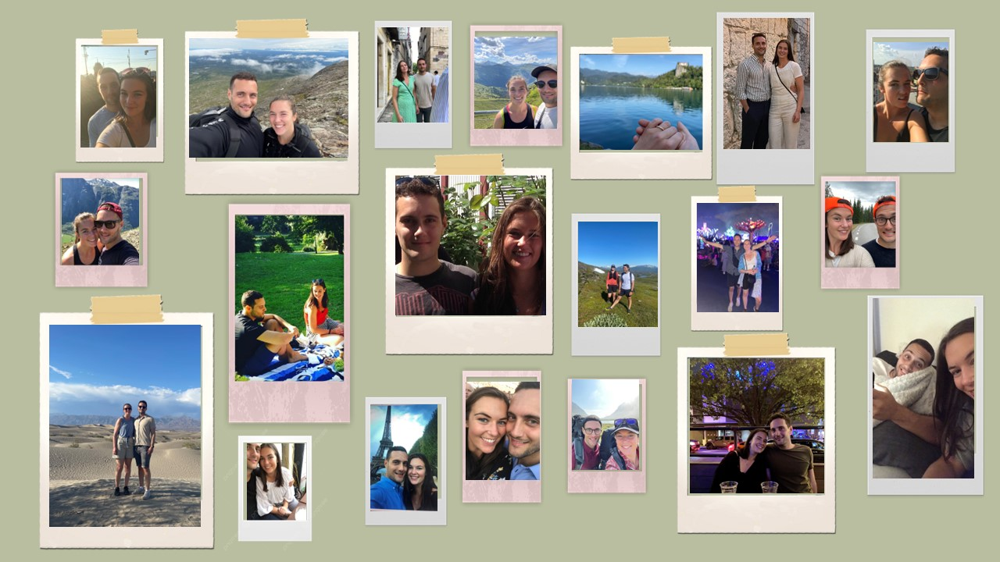
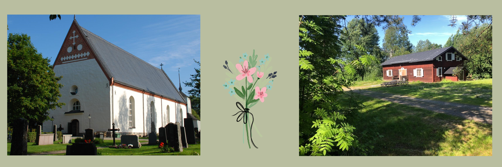
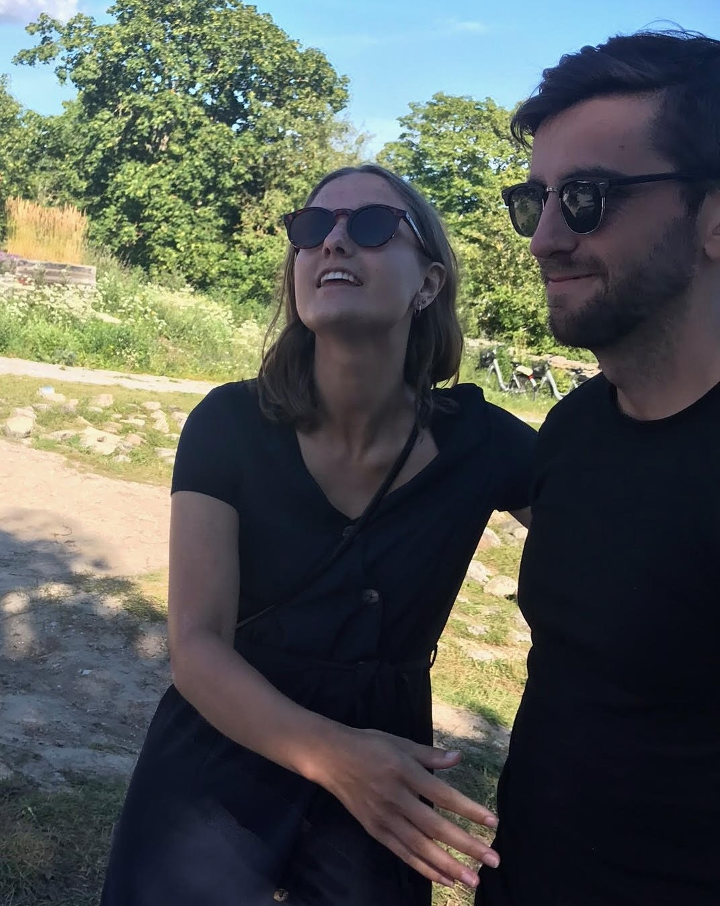
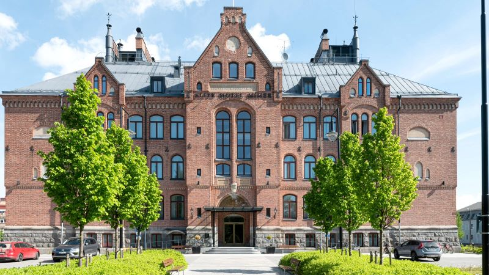

Vi är verkligen glada över att ni vill vara med och fira denna speciella dag med oss! Här på bröllopssidan hittar ni all den information som ni behöver.
Längst ner på sidan finns formuläret för att OSA.
Den 13 juli 2024 så är det dags för vårt bröllop. Givetvis gifter vi oss i den kyrka på vars kyrkogård vi träffades för första gången. Sommaren var 2013. Vi sommarjobbade då båda som kyrkogårdsarbetare vid Backens kyrka med att vårda de gröna områdena. Backen är Umeås äldsta kyrka med anor sedan 1200-talet. Jonathans morfar har dessutom varit präst där! I början pratade vi mest om väder och arbetet, men med tiden utvecklades konversationerna till djupare ämnen. När vi inte gasade runt med vår lilla eltruck eller fokuserat rensade rabatter så delades skratt och historier mitt ibland de tysta stenarna och blommorna som växte på kyrkogården. I sommar är det hela 11 år sedan vi först träffades och nästan exakt 10 år sedan vi faktiskt blev ett par.
Efter vigseln så är det dags för efterföljande firande och middag på Regementsgården i Umeå. Välkommna!
För att få umgås och fira ordentligt tillsammans planeras festligheterna ske i dagarna tre.
Förhäng 12 juli
Kvällen innan bröllopet finns möjlighet för de gäster som önskar att delta i ett förhäng för att träffas och tillsammans ladda upp inför den stora dagen. Dessutom passar vi under kvällen på att fira att den 12:e juli råkar vara brudparets 10-årsdag som ett par! Vi umgås, äter lite mat och utför en aktivitet tillsammans. Med reservation för eventuella planändringar så kommer det i sann Umeå-anda att spelas brännboll! Varje år sedan 1974 har nämligen VM i brännboll, den s.k. Brännbollsyran, spelats i staden. Expert som nybörjare är välkommen att delta, och vill man inte spela så får man gärna komma och hänga med oss ändå.
Anmälan till förhänget görs i OSA-formuläret längst ner på sidan. Mer information om tid och plats kommer närmare bröllopet.
Bröllopsdagen 13 juli
Därefter är det dags för den stora dagen! Vigseln äger rum i Backens kyrka under tidig eftermiddag den 13 juli. Därefter tar festligheterna vid i Regementsgården och fortsätter till sent in på natten för de som vill.
Transport
Det enkelt att ta sig mellan kyrkan, festlokalen och hotellet!
Buss
Lokalenbuss 1 tar 13 minuter från centrala Umeå till Backen. Närmsta hållplats till kyrkan är Klockarvägen. För att komma till Regementsgården tar ni samma buss tillbaka och hoppar av vid Dragonskolan för att sedan ta en kort promenad till Regementsgården.
Parkering
Det finns möjlighet till parkering både vid kyrkan och vid Regementsgården.
Taxi/Uber
Det finns flera taxialternativ och Uber i Umeå.
Anmäla tal
Under kvällen är vi i trygga händer under ledning av våra fantastiska toastmasters Emelia Nilsson och Jesper Nordbrandt. De lovar att ta med oss på en oförglömlig kväll! Till Emelia och Jesper är man välkommen att anmäla om man vill hålla ett tal, göra en sketch, sjunga en sång, hålla en lek eller kanske något helt annat. Initiativ välkomnas!
Anmäl tal till:
eemelia.nilsson@icloud.com
jjespernordbrandt@gmail.com
Klädkod: Sommarfin
Som med det mesta inom vett och etikett kommer man långt med lite sunt förnuft. Enkelt kan man säga att det är som en mix mellan klädkoden kavaj och mörk kostym. Se till att klä dig finare än vad du hade gjort till vardags. Ett bra ledord för klädkoden sommarfin är att du bär något du känner dig fin i och som gärna är i ljusare nyans.
Frukost 14 juli
Avsluta bröllopshelgen på topp genom att komma och äta (en sen) frukost tillsammans med brudparet och många andra bröllopsgäster. Där kommer brudparet att bo, och det finns även möjlighet för bröllopsgäster att boka rum där (se mer information om boende nedan). För bröllopsgäster som inte bor på hotellet men som ändå vill delta vid frukosten är man hjärtligt välkommen att göra det. Anmälan till frukosten grös i OSA- formuläret längst ner på sidan. Vi återkommer med exakt tid närmare bröllopet.
För alla som reser in till vackra Umeå och för de Umeåbor som känner för en lyxig hotellnatt finns möjlighet att boka rum till rabbaterat pris på Mimers hotell. Hotellet ligger bekvämt mitt i stan, på behändigt avstånd från såväl kyrka som festlokal. Brudparet kommer att bo på hotellet 12-14 juli.
För att boka ett rum på Mimers kan ni använda denna länk till hotellet. Då får ni 20% rabatt på hotellpriset.
Vi önskar inte några presenter till bröllopet. Det viktigaste är att ni vill dela en roligt dag med oss. Vill man trots detta ge en present så uppskattar vi ett bidrag till vår bröllopsresa. Ni kan då swisha till 072 400 81 72.
Toastmasters Emelie & Jesper
eemelia.nilsson@icloud.com / jjespernordbrandt@gmail.com
Brudparet
taherijonathan@gmail.com / 072 400 81 72
Den här hemsidan är byggd som ett joint-venture mellan ChatGPT och Jonathan.